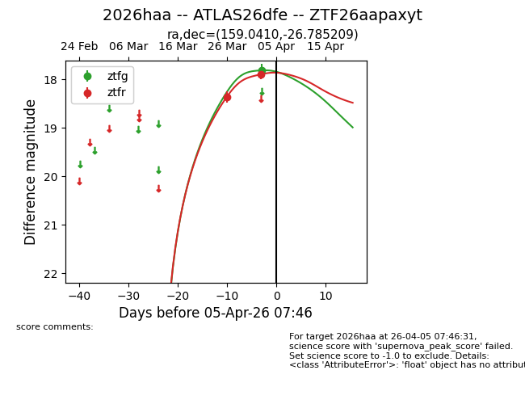
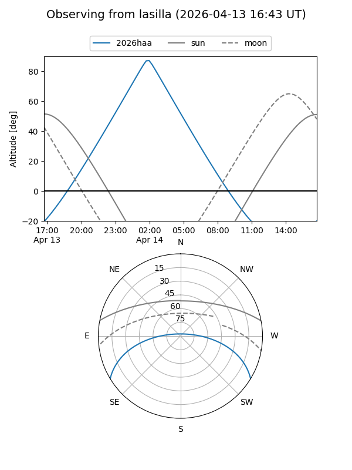
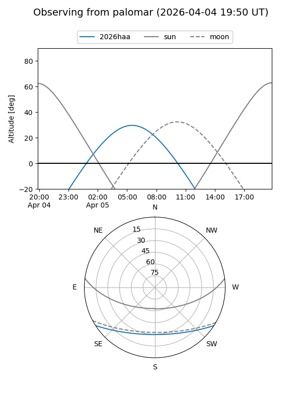
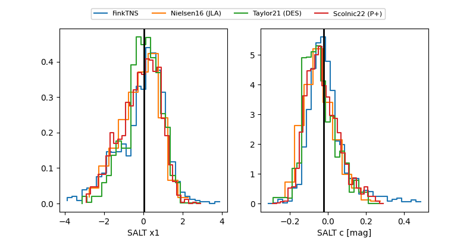

2026haa
Target 2026haa at 2026-04-05 07:49
Aliases and brokers:
FINK: link
Lasair: link
ALeRCE: link
TNS: link
YSE: link
alt names
ZTF26aapaxyt (ztf,fink_ztf)
2026haa (tns,yse)
ATLAS26dfe (atlas)
Coordinates:
equatorial (ra, dec) = 159.0410,-26.78521
equatorial (HMS+DMS) = 10:36:09.84,-26:47:06.75
galactic (l, b) = (269.0273,+27.03804)
Flags:
Photometry:
last ztfg=17.81, ztfr=17.89
1 ztfg, 2 ztfr detections
Lightcurve

Visibility


Additional plots
